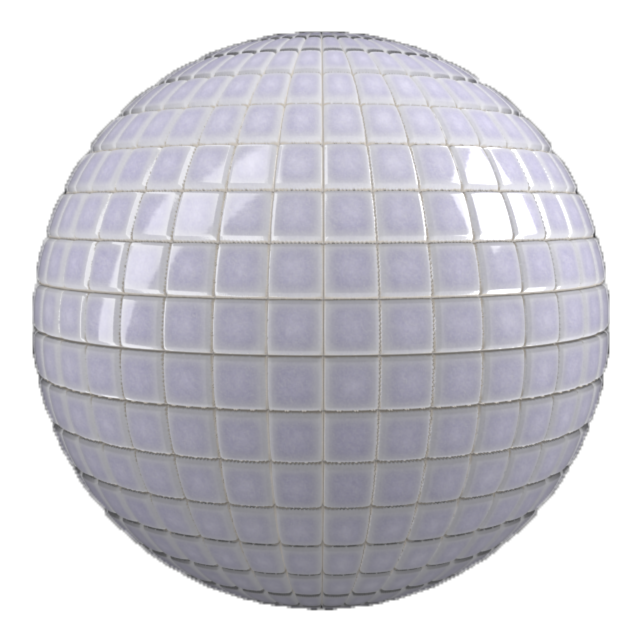
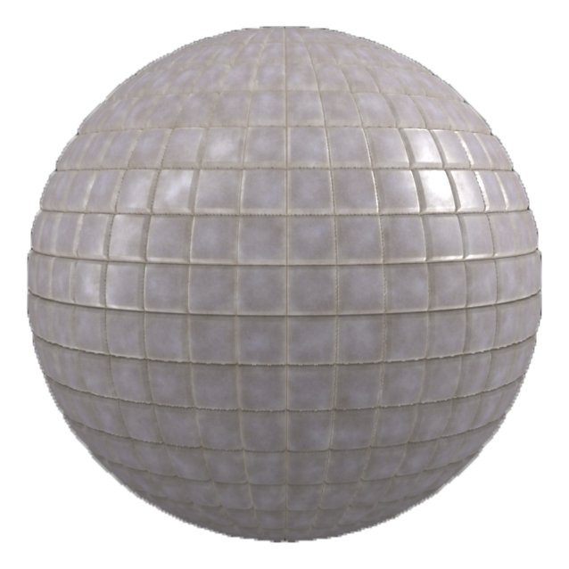

In: Wear and Finish
Use the Dirt filter to add dirt on top of a material. The Dirt filter is great for making materials seem older and uncared for.

Compare the clean tiles above with the dirt filter applied to them below.

Basic parameters
Random Seed:
The random seed determines the random values of other parameters that use randomness in this filter.
Dirt Spread: 0-1
Controls the extent of the surface area covered by dirt
Top Dirt Spread: 0-1
Controls the top surface covered by dirt, with no focus on the creases of the material
Dirt Contrast: 0-1
Adjust the level of contrast between the different dirt specks in order to control how the dirt blends with the underlying material.
Dirt Opacity: 0-1
Controls the level of transparency of the dirt in the base color channel. 1 is completely opaque.
Dirt Color: 0-1
Select the color of the dirt.
Dirt Roughness: 0-1
Adjust how light scatters across the surface of the material
Dirt Metallic: 0-1
Define how reflective the surface of the dirt is
Dirt Height: 0-1
Controls the impact of the dirt on the Height map
Dirt Normal Intensity: 0-1
Controls how much the level of dirt impacts the Normal map
Use Surface Imperfections: toggle
Enable or disable the use of a surface imperfection. If enabled, an additional control appears:
Surface Imperfections: image
Import an image to use as a surface imperfection or use one of the texture generators available by default in the Sampler asset library such as “Stain” or the “Bnw Spots”